Tässä tehtävässä lähtötilanteena on se, että domainilla on jo yksi palvelin ja tarkoitus on luoda alidomain sekä toinen palvelin.
Aloitan luomalla cloud server dropletin DigitalOceaniin. valitsen käyttöjärjestelmäksi Ubuntu 18.04.3 (LTS) x64:n. Otan opiskelijalle sopivan halvimman ja pienimmän mahdollisen palvelimen, joka maksaa $5 kuussa. Valitsen Frankfurtin datakeskuksen sijainniksi. En valitse lisäpalveluita palvelimelle.
Kirjaudun palvelimelle julkisella avaimella komennolla ssh root@[palvelimeniposoite]. Teen palomuuriin reiän
ssh:lle porttiin 22 komennolla sudo ufw allow 22/tcp. Tämän jälkeen käynnistän palomuurin komennolla sudo ufw
enable. Sitten luon käyttäjän komennolla sudo adduser [käyttäjänimi]. Annan käyttäjälle salasanan ja asetan muut
tarvittavat tiedot.
Sitten annan käyttäjälle sudo:n ja adminin oikeudet komennoilla sudo adduser [käyttäjänimi] sudo ja sudo adduser
[käyttäjänimi] adm.
Tämän jälkeen kopioin juurikäyttäjän ssh-avaimen uudelle käyttäjälle root-kotihakemistosta käsin komennolla cp
-r .ssh /home/[käyttäjänimi]/. SSH-avaimeen täytyy antaa vielä oikeudet, teen sen uuden käyttäjän kotihakemistosta
käsin komennolla sudo chown [käyttäjänimi].[käyttäjäryhmä] -R .ssh.
Kokeilen vielä, että uudella käyttäjällä on pääsy palvelimelle ja sudo-oikeudet, ennen kuin lukitsen juurikäyttäjän.
Avaan uuden terminaalin. Annan komennon ssh [käyttäjänimi]@[IP-osoite]. Yhteys muodostuu ilman ongelmia. Kokeilen
toimiiko sudo-oikeudet antamalla komennot sudo apt-get update ja sudo apt-get -y install apache2. Komennot meni läpi
ongelmitta ja apache2 asentui.
Lukitsen juurikäyttäjän komennolla sudo usermod --lock root. Suljin yhteyden komennolla exit.
Aloitan kirjautumalla nimipalveluun osoitteessa namecheap.com luodakseni alanimen.
DNS-hallinnassa luon uuden A-tietueen hostille "dev", ja laitan sen osoittamaan uuden palvelimen IP-osoitteeseen. Haluan siis alinimen olevan dev.osholopa.me.
Otan ssh-yhteyden palvelimelle. Teen web-sivustoille palomuuriin reiän porttiin 80 komennolla ufw allow
80/tcp
Muutan oletussivua komennolla sudo echo "Hei maailma!"| sudo tee/var/www/html/index.html.
Kokeilen ottaa selaimella yhteyden osoitteeseen dev.osholopa.me. Sivu toimii ja saan yhteyden palvelimelle.
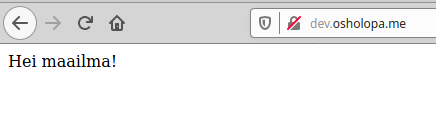Aloitan ottamalla ssh-yhteyden palvelimelle komennolla ssh [käyttäjänimi]@[Palvelimen-IP-osoite].
Tarkastelin auth.logia hakemistossa /var/log/ ja siellä näkyi kirjautumisyrityksiä mielenkiintoisilla käyttäjänimillä:
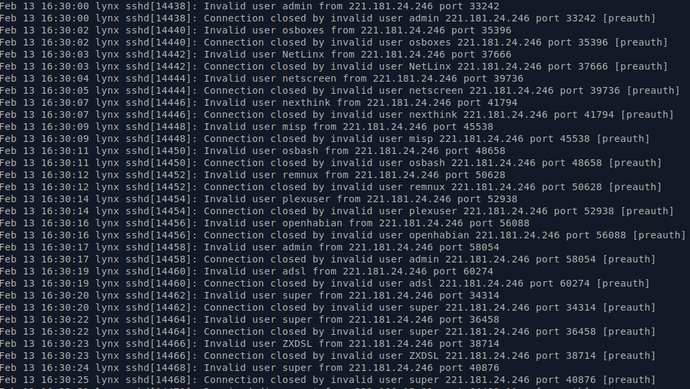Analysoidaan ensimmäistä riviä:
Feb 13 16:30:00 - Aikaleima, 13. helmikuuta klo 16:30:00 (UTC)
lynx - palvelimen nimi
sshd[14438] - sshd, eli ssh-daemon ja pid eli prosessi-id 14438
Invalid user admin - väärä käyttäjätunnus admin
from 221.181.24.246 - IP-osoite, josta kirjautumisyritys on tehty
port 33242 - portti johon kirjautumisyritys on tehty
Kaikki tämän ikkunan kirjautumisyritykset ovat tehty samasta IP-osoitteesta. Kuten kuvasta näkee, muita yritettyjä nimiä ovat osboxes, NetLinx, netscreen, nextthink, misp, osbash, remnux, plexuser, openhabian, adsl, super ja ZXDSL.
Aloitan ottamalla ssh-yhteyden palvelimelle, jonka jälkeen lisään Certbot PPA:n (Personal Package Archive).
HUOM! Nämä ohjeet ovat suunnattu vain Apachella ja Ubuntu 18.04 LTS:llä pyöriville nettisivuille.
Ajoin seuraavat komennot:
sudo apt-get updatesudo apt-get -y install software-properties-commonsudo add-apt-repository universesudo add-apt-repository ppa:certbot/certbotsudo apt-get updateNyt Certbot voidaan asentaa komennolla:
sudo apt-get -y install certbot python-certbot-apache
Certbotin voi antaa muokata Apachen konfiguraatiota automaattisesti toimiakseen:
sudo certbot --apache
Asennusohjelma käynnistyi, vastailin kysymyksiin ja nyt https:n pitäisi toimia.
Testattuani ssl:ää osoitteessa https://www.ssllabs.com/ssltest/analyze.html?d=osholopa.me huomasin ettei palvelimelle saatu yhteyttä.
Käynnistin palvelimen uudestaan komennolla sudo systemctl restart apache2
Kävi ilmi, että SSL käyttää porttia 443, avasin portin komennolla sudo ufw allow 443/tcp
Tämä ratkaisi ongelman:
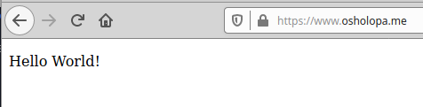SSL Labsin antama tulos valitti CAA-tietueen puuttumisesta.
Lisään CAA-tietueen nimipalvelussa:
Nyt TLS-salakirjoitus toimii.
Tavoitteenani on tehdä LAMP-stackilla toimiva muistiinpano-ohjelma. Muistiinpanot on tarkoitus tallentaa tietokantaan ja käyttöliittymän tavoitteena on voida luoda, tarkastella, muokata ja poistaa muistiinpanoja. Sovelluksen käyttöliittymän rakentamisessa käytän apuna materialize css:ää. Rakennan sovelluksen paikallisesti ensin niin, että se toimii ja siirrän sitten palvelimelle.
Kehittäessäni ohjelmaa paikallisesti käytän tietokannan hallintaan phpMyAdminia. Loin tietokannan notes_db ja sinne relaation notes:
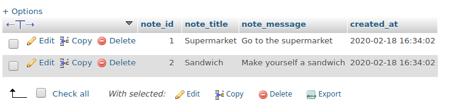Yhdellä muistiinpanolla on 4 attribuuttia: note_id, note_title, note_message ja created_at.
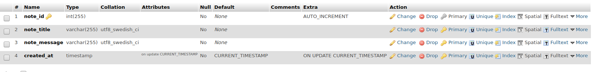Nyt ohjelma on siinä vaiheessa, että sen voi siirtää palvelimelle tuotantoon. Ohjelmalla voi lisätä, tarkastella, muokata ja poistaa tietokannassa olevia muistiinpanoja.
Jotta sovellusta voisi käyttää palvelimella täytyy sinne asentaa vähintään:
Sovellus on nyt hakemistossa /home/oskari/Documents/todoapp
Kopioin ohjelman palvelimelle komennolla:
scp -r todoapp/ [käyttäjänimi]@osholopa.me:public_html/
Jotta ohjelma toimisi, täytyy palvelinta sekä ohjelmaa hieman konfiguroida. Otan ssh-yhteyden palvelimelle.
Asennan php:n ja mariadb:n komennolla
sudo apt-get -y install php mariadb-client mariadb-server
Tarkistan onko mariadb päällä komennolla sudo systemctl status mariadb
Ohjelma ei ainakaan ihan heti toimi, testaan toimiiko php luomalla phpinfo()-testitiedoston test.php. Php näyttää ainakin toimivan:
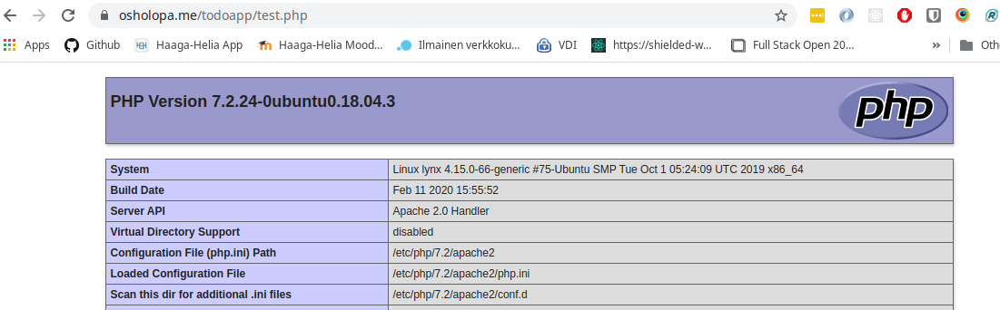
Aloitan konfiguroimaan tietokantaa.
Ajan komennon sudo mysql_secure_installation.
Asetan juurikäyttäjälle salasanan. Muihin kysymyksiin vastaan kyllä.
Luon tietokannan notes_db:
create database notes_db;
Luon tietokannalle käyttäjän:
GRANT ALL ON notes_db.* TO [käyttäjä]@localhost IDENTIFIED BY '[salasana]';
Kirjaudun ulos komennolla exit. Kirjaudun uudella käyttäjällä sisään. Ajan komennon USE notes_db.
Luon taulun notes komennolla:
CREATE TABLE notes (note_id INT AUTO_INCREMENT PRIMARY KEY, note_title VARCHAR(255), note_message VARCHAR(1024),
created_at TIMESTAMP)
Luon tietueita tauluun komennoilla:
INSERT INTO notes(note_title, note_message) VALUES ("Test", "This is a test note");
INSERT INTO notes(note_title, note_message) VALUES ("Test1", "This is another test");
Kun tarkistan miltä tietokanta näyttää komennolla
SELECT * FROM notes
saan seuraavanlaisen tuloksen:
Ohjelma ei vieläkään toimi. tutkin asiaa hiukan ja käy ilmi, että täytyykin asentaa vielä tietokantamoduuli
PHP:lle.
Asennan sen komennolla sudo apt-get -y install php7.2-mysql.
Käynnistän palvelimen varmuuden vuoksi uudestaan ja tarkistan tilanteen.
Nyt ohjelma toimii, tietueet näkyvät selaimessa:
Muistiinpanon lisääminen näyttää tältä:
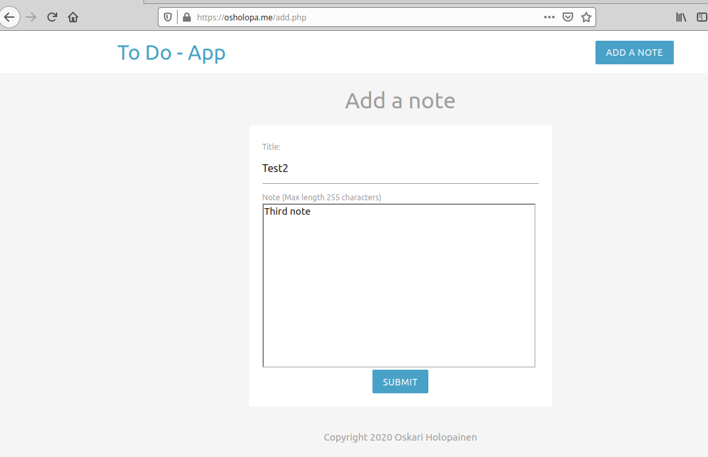Muistiinpanoissa on tietty validointi, tyhjä lomake tai erikoismerkit paitsi pisteet ja pilkut ei mene läpi eikä script tageja ajeta.
Nyt muistiinpano on lisätty ja se tulee näkyviin:
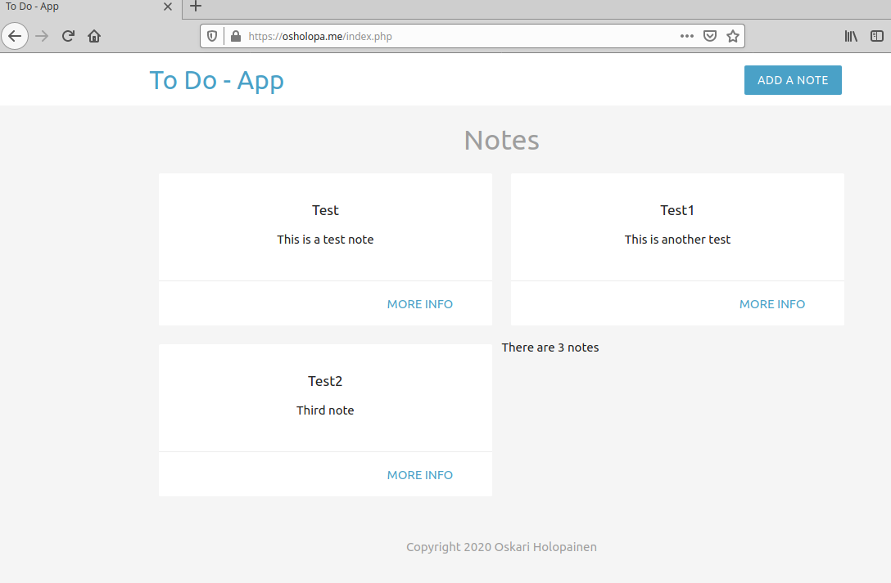Linkistä more info - pääsee tarkastelemaan näkymää, jossa näkyy luomishetki sekä mahdollisuus poistamiseen tai muokkaamiseen.
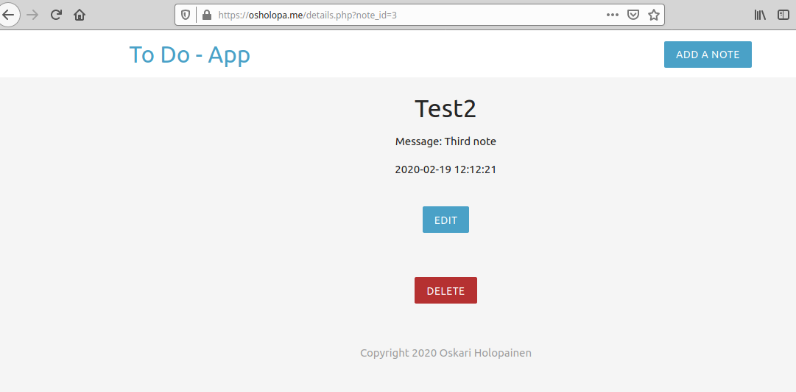Muokkaamisnäkymä:
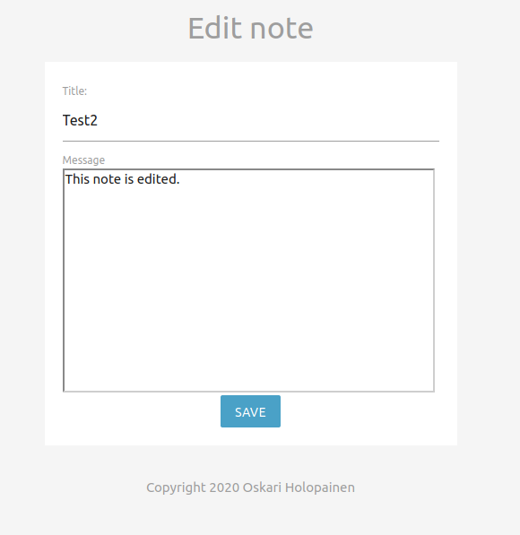Nyt muistiinpanoa on muokattu.
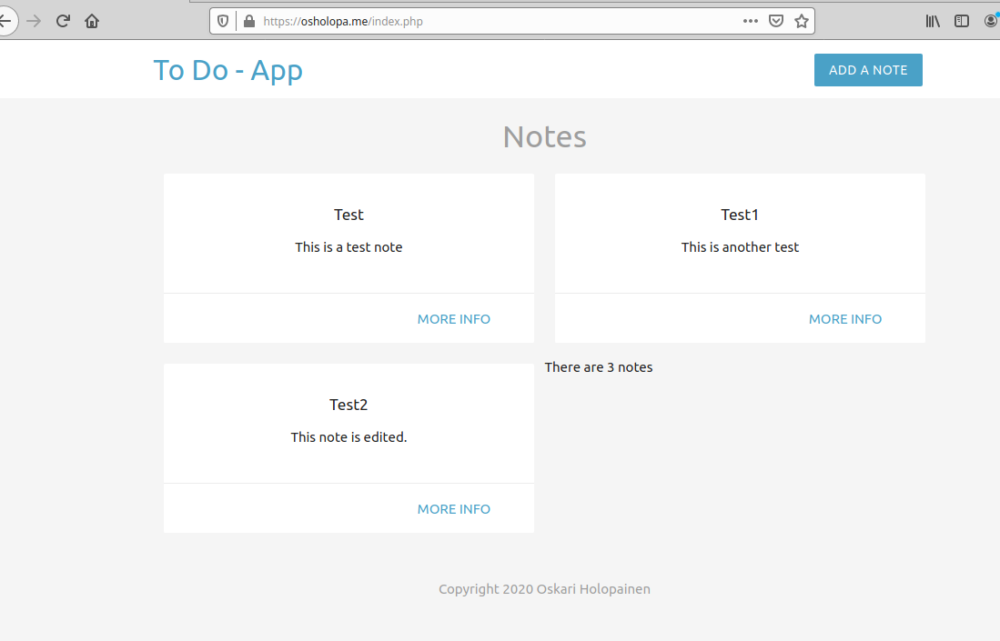Poistaminen tapahtuu painamalla delete-nappia more info-näkymässä:
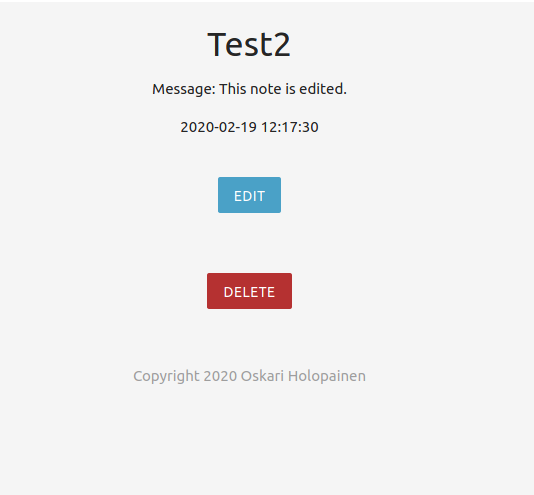Muistiinpano on poistettu:
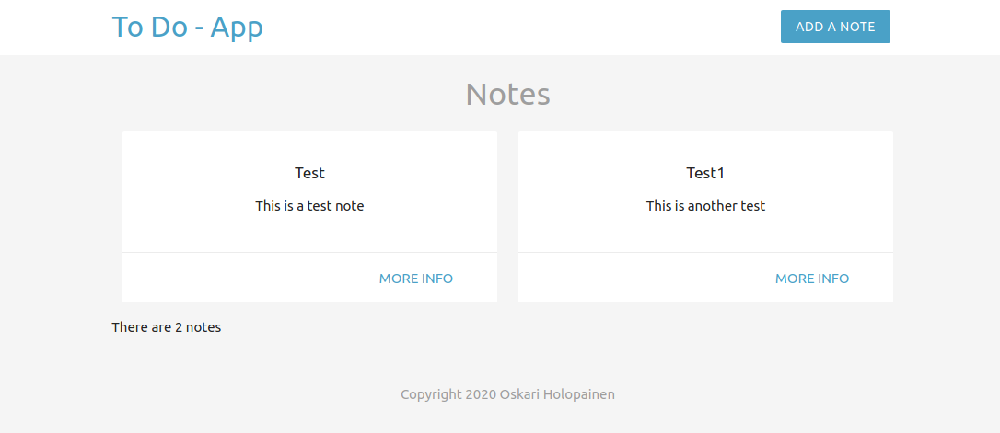Sovelluksen tämänhetkinen koodi löytyy GitHubista